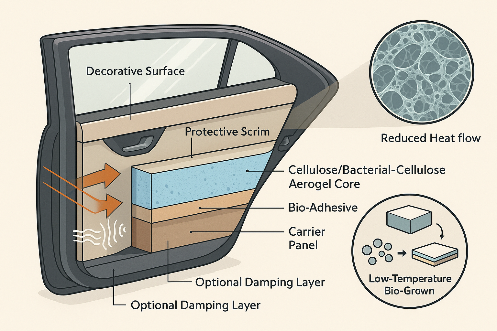

🌱 The Innovation
Ultralight, plant-derived "frozen foam" pads (aerogels/foams made from cellulose or bacterial cellulose) used behind trim—headliners, door inners, parcel shelves—to cut cabin noise and heat flow. Think: marshmallow-light pads that absorb hiss and keep heat out, made from renewable fibers and processed at low temperatures.
⚙️ The Science
Cellulose is turned into a water-based gel, then dried to leave a nano-porous solid (aerogel). Those tiny pores scatter sound and block heat transfer (very low thermal conductivity). By adjusting the gel recipe and drying method, we tune which frequencies are absorbed and how stiff/soft the pad is. Thin scrims and bio-adhesives protect the fragile core; hydrophobization (surface treatment) manages humidity.
📸 Images

Bio-Grown Aerogel Cabin Liner
A thin, lightweight layer grown from cellulose/bacterial cellulose and laminated behind standard interior skins. Its nanoporous network blocks heat and scatters sound, delivering quieter, better-insulated cabins at lower weight. Made via low-temperature, water-based steps (grow → dry → treat → laminate) that fit current trim workflows.
Gallery
💡 Inspirations
🌍 Far-Domain Precedents
How it's used: Hydrophobized, highly transparent cellulose aerogels sit inside glazing units to dramatically reduce heat loss while admitting daylight. (Nature, SciOpen)
What we borrow: Moisture control via silanization; handling/laminating fragile aerogel sheets; the "ultra-thin but high-R" mindset for tight interior cavities.
How it's used: New VIPs replace fumed-silica cores with cellulose bio-aerogels to achieve extreme insulation at thin gauges for buildings/industry. (ChemistryViews, va-Q-tec)
What we borrow: Assembly and edge-sealing practices for very porous cores; durability know-how when panels are thin but must be handled in manufacturing.
How it's used: Knittable, flexible aerogel fibers/laminates deliver warmth without bulk in garments. (Science, ScienceDirect)
What we borrow: Breathable, flexible stacks for seats/headliners; joining/lamination that preserves water-vapor permeability (comfort + fogging/VOC awareness).
How it's used: Lab studies show high sound-absorption (200–5000 Hz) and air-like thermal conductivity in BNC aerogels; freeze-drying and pore control tune performance. (PubMed, American Chemical Society Publications)
What we borrow: Process knobs (freeze-dry parameters, density) to hit EV-relevant frequencies and stiffness targets.
How it's used: Aerogels (inorganic/organic/biopolymer) have promising sound absorption thanks to extreme porosity; literature flags the need for more standardized acoustic data—useful guidance for our test plan. (Wiley Online Library, cemef.minesparis.psl.eu, ScienceDirect)
What we borrow: Material performance benchmarking, test methodology guidance.
🚗 Near-Domain Reality Checks
How it's used: Felt/nonwovens (cotton/PET mixes) like Autoneum Flexi-Loft—lightweight, formable acoustic blankets used for inner dashes, carpets, etc. (Autoneum. Mastering Sound and Heat., Nonwovens Industry)
How it's used: Melamine foam (BASF Basotect) deployed by OEMs (e.g., VW engine cover acoustics). Not bio-based; good benchmark for mass, absorption, flammability. (BASF, basotect.basf.com)
How it's used: Aspen Aerogels PyroThin shields in EV battery packs (thermal/runaway barriers). Shows automotive-grade aerogel processing exists, just not yet for trim acoustics. (Aspen Aerogels)
🎯 Why This Matters
- Acoustic win at thin gauges: Nanoporous structure lets us target EV hiss/whine bands without bulky stacks. (Mapped from building-glazing and BNC studies.) (Nature, PubMed)
- Thermal comfort & HVAC load: Very low thermal conductivity gives headliner/roof and parcel-shelf parts extra thermal resistance. (Borrowed from glazing/VIP work.) (Nature, ChemistryViews)
- Sustainability: Bio-based feedstock, water-borne processing, and compostable/benign end-of-life pathways vs. petro foams. (Seen across cellulose aerogel reviews.) (MDPI, PMC)
🔍 Current Landscape
- Commercialized today (automotive): PET/cotton felts (Autoneum) and melamine foams (Basotect) for NVH; aerogel in battery protection (Aspen). No mainstream cellulose-aerogel interior liners yet. (Autoneum. Mastering Sound and Heat., basotect.basf.com, Aspen Aerogels)
- Experimental / pre-commercial:
- Cellulose aerogels for glazing & building insulation (ultra-low k, moisture-managed). (Nature)
- Silica–cellulose hybrid aerogels with reported SAC \~0.4–0.5 (normal incidence). (American Chemical Society Publications, PMC)
- BNC aerogels with high sound absorption across 200–5000 Hz; air-like k. (PubMed)
- Knittable aerogel fibers for flexible, breathable insulation. (Science)
🚀 Innovation Assessment
✨ Novelty
- Concept novelty: High. We found no evidence of cellulose- or BNC-aerogel interior liners in production vehicles; closest automotive use of aerogel is in battery thermal shields, not cabin NVH/thermal pads. (Aspen Aerogels)
- Technique maturity in other sectors: Medium–High for thermal glazing/insulation and VIPs; emerging for acoustics with bio-aerogels (solid lab data, fewer standardized acoustic datasets). (Nature, ChemistryViews, Wiley Online Library)
💡 Non-obviousness
- Why this isn't a "usual suspect": The cabin NVH world leans on felts/foams that are easy to die-cut and robust in humidity. Aerogels are fragile and hygroscopic without tweaks. The non-obvious leap is to import glazing/VIP tricks (silanization, protective scrims, controlled lamination) to make bio-aerogels survive vehicle humidity/handling while exploiting their thin-gauge acoustic + thermal strengths. (Wiley Online Library, Wiley Online Library)
🤝 Key Players & Partners
- Thermal glazing & cellulose aerogels (academia/consortia): Research teams behind transparent silanized cellulose aerogels (Nature Energy 2023). (Nature)
- VIPs with bio-aerogel cores: Aerogel-it and va-Q-tec partnership on cellulose-core VIPs. (ChemistryViews)
- Aerogel fibers & flexible stacks: Teams publishing knittable aerogel fibers (Science 2023); textile labs working on aerogel-textile laminates. (Science)
- Automotive NVH baselines: Autoneum (felts) and BASF Basotect (melamine foams) for benchmarks and A/B testing. (Autoneum. Mastering Sound and Heat., basotect.basf.com)
- Automotive-grade aerogel processing: Aspen Aerogels (battery barriers)—experience with automotive specs and supply. (Aspen Aerogels)
📊 Impact × Readiness Roadmap
Explore
(High Impact, Low Readiness)
Develop
(High Impact, High Readiness)
Avoid
(Low Impact, Low Readiness)
Leverage
(Low Impact, High Readiness)
🛤️ Research Trail Summary
We searched outside conventional foams/felts and asked: Who else uses ultralight porous media to manage heat and sound? That led to aerogels (battery safety, building insulation). We then checked if cellulose-based aerogels offer similar physics with renewable feedstocks and low-energy processing. Reviews and lab studies confirm the acoustic/thermal potential; automotive practice shows aerogels are already qualified (in batteries) and cellulose is already in auto composites (NCV), but not yet combined as cellulose-aerogel cabin liners—hence the opportunity. (Cemef, ScienceDirect, Aspen Aerogels, JapanGov - The Government of Japan)
One-line takeaway
Cellulose aerogel cabin liners convert a well-proven physics (ultralight porous media for heat/sound) into a renewable, low-energy material platform for interiors—novel in cars, feasible to prototype now, and positioned for high impact if we de-risk humidity, flammability, and VOC.